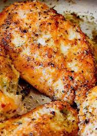

Pan-Roasted Chichken Breasts

Ingredients
- 4 boneless chicken breast halves with skin
- salt and freshly ground black pepper to taste
- 1 tablespoon chopped fresh herbs (thyme, parsley, rosemary)
- 2 tablespoons olive oil
- ¼ cup apple cider vinegar
- ¼ cup cold butter, cut into small pieces
- 1 tablespoon chicken broth (or water), if needed to thin sauce
Steps
- Season chicken on both sides with salt and pepper.
- Heat olive oil in a heavy skillet over medium-high heat until it starts to shimmer. Place chicken breasts in skillet skin side down. Sprinkle with fresh herbs. Do not disturb the breasts until the skin side sears, 5 or 6 minutes. Turn chicken.
- Cook until internal temperature reaches 150 degrees F, about 5 minutes. Add vinegar and butter to pan with chicken. Shake pan gently until butter melts and internal temperature of chicken reaches 160 to 165 degrees F, 2 to 3 minutes more. Add a splash of chicken broth or water if sauce needs to be thinned.